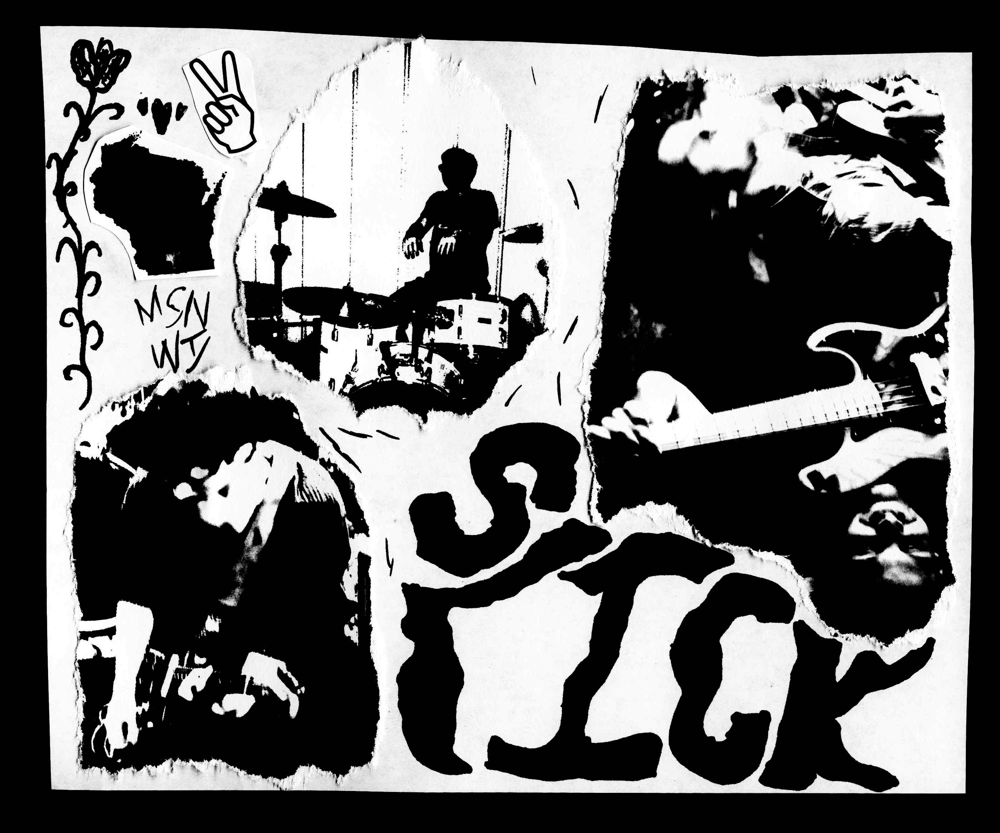

blog - band news, thoughts, rants, and et cetera
July 31st, 2025
|
the summer's mostly over. late july drags on every year, not that it's bad. its the feeling of laying in bed past your alarm on a sunday. pleasant sleepiness. anywho, band updates.
slick has been refining and recording our 2nd EP and working on a split with In Ropes. the EP is gonna be a full band release but the songs on the split will be some demos culled from the depths of Nate's archives of demos. so keep yer eyes peeled for a couple of new releases here. on top of that, fall shows are starting to move. we have a gig booked with some great Madison acts for August 23rd. more info on the shows page. more show announcements will follow. till next time -Nate |
July 10th, 2025
|  |
June 24th, 2025
|
new tape out now |
June 9th, 2025
| slick just wrote the perfect pop song. |
May 22nd, 2025
|
what's up slickers. the ep's been out for a month and those of you who ordered one seem to be enjoying it! thanks for the kind words. pick one up at our future shows or off of our site here.
some other things, we're takin a few months off of playin shows to focus on recording some new songs and getting another batch of releases together. we've got two cassettes planned for release later on our look both ways label. so keep it tuned. stuff is happening. |
April 4th, 2025
|
THAT EP THOUGH |
March 25th, 2025
|
Just got a push-pull pot for my amp... sound guys love me now.
Also finished the sopranos a couple days back. What's up with that final scene? There's twenty years of speculation to catch up on. I really should get back to work. The lab calls. |
March 23rd, 2025
March 8th, 2025
|
show tonight at gamma ray babyeeeeee
ep out on april 4th. release show back at gamma ray with my friend Eddie's band Dicot, old friends Yolk, and new friends beauty filter. we're pumped for this one. and get this, we've also got the next EP 80% tracked for y'all... we're excited for what this year has in store. |
February 4, 2025
|
couple announcements:
first off, we got an EP coming out this spring on cassette and streaming. check the art: 
we're excited to put this out. this is only the beginning, keep tuned for more... like our gig at Gamma Ray supporting Chicago noise rockers Mr. Phylzzz and Madison's ownWhippets. -Nate |
GIG REPORT - Cardinal, Jan 26.
|
this sunday (Jan 26th, 2025) we joined Madison'sDrive Like I Do and
Sonic Daphne, with Milwaukee'sMIZZY
for a rambling Sunday night gig at The Cardinal.
We opened the night with a quick sound-check, then played our set. It's bad form to gas yourself up, so we'll leave it up to the attendees to say how we did. Sonic Daphne took the stage after us. The Daphnes were great, bringing a mathematical take on shoegaze which isn't heard much. Their lead singer, Terra, was seriously shredding. Tapped guitar lines with ethereal vocals backed with a citadel of synths and dance rhythms. Only the dead wouldn't dance during this set (or at least a head-bob). The sounds wielded by this band and the professionalism they brought make them something to see if you're in the Madison area. MIZZY was up next. A politically minded, rage-fueld, righteous, group of young shoegazers out of Milwaukee's fertile DIY scene. These kids brought so much raw energy to their show, jumping onto amps and making a racket. Shoegaze is typically an anemic genre, and it's wonderful to have a band combine the heavy textures of the genre with actual rage and indignancy at the state of our nation's politics. check 'em if you can. Drive Like I Do were last. These guys are personal favorites of mine, coming across them soon after I migrated to Madison. If there were ever a case of the band sounding like the record, this was it. DLID's debut album, Apollo of Dogs, is one of my favorite releases from 2024. DLID combined the raw energy of old Dischord punk bands with a distinct skramz influence. of particular note is Cals' inventive, creative, perfect drumming. Not that the rest of the band wasn't bringing it. Alex's screams and interlocking guitar lines with Gav (also of Sonic Daphne) were ear cnady. Bassist Liam held the low end, and there was a great guest vocalist for their closer, Beacon. Check these guys out if you haven't yet. Thanks to Skye at the Cardinal for booking the show and running sound. Reach out to 'em if you're lookin for a gig in Madison. -nate |
January 24th, 2025
|
the slow exodus of people from large social media platforms like X, Instagram, and Facebook has been great to see. bluesky and similar alternative platforms are a breath of fresh air. though they may still have limits on how you can control your internet presence, it's a positive move away from corporate communication channels.
last night I came across freakscene.us, a DIY forum created by some members of the Portland DIY scene (correct me if I'm wrong, that's just my initial impression). it's retro, it's tiny, it's all geo-cities nostalgia. I think it's great. freakscene is trying to create a way to let DIY communities connect with each other without compromising their values or being exposed to sponsored, algorithmic content. the on-the-nose dino jr. reference is fun, too. right now membership is pretty limited with much of the user base located on the West Coast. there's some smaller threads popping up for midwestern and mountain west metros, which will grow in time as people learn about the platform. -nate |
January 14th, 2025
|
Today's internet is a hard place for me to spend time on. This has become a common take for many people. The consolidation of the internet into a few heavily used channels or "ecosystems” has made using the web less fulfilling and enjoyable to me. Search results optimize clickable content, leading to homogenization of information. Since digging through pages and pages of trash SEO content is incredibly dull and unrewarding, I find myself just going with the easiest result more often than not. Oftentimes I wonder if I'm becoming dull, or dumb since the junk that search engines spit out now feels so deliberately un-engaging.
It might be "net-hippie bullshit” but older websites had charm and imperfection to them. Twenty dozen construction gifs are camp, but more genuine than the linoleum-floor inspired modern tech and social media. For years I've been seeking a way to use the internet in a way that doesn't leave me feeling so drained, without mindless scrolling. I've limited my time online, I've deleted social media accounts, I've tried to bookmark pages which I love but something was lacking. Avoiding the internet comes across as paranoid luddism to me. Some form of a return-to-a-good-old-days fantasy that most of us will never attain. Deleting social media was self-isolating, and I missed the connections I had with my friends online. Bookmarks can only get you so far, when most of the time your searches and questions steer you towards reddit and SEO-blogs now. I remember using the internet when I was younger and it didn't feel so terrible to use. Creativity, connections, being genuine, and health are all that matter. My time on the internet wasn't reflecting the values I wanted to live by. Starting Slick by myself in March, then growing the project to it's current lineup has been incredibly rewarding. I thought that it was important to have this band represent the values I've begun to grow for myself. With most band-content (even in the independent space) being communicated through controlled, limited channels like Instagram or Facebook, I thought it was important that this band's web presence represent the independence and creativity that most social media doesn't. It's a bit of a paradox isn't it? I talked about a return-to-good-old-days dream earlier, but isn't making a hacked-together HTML nightmare just pining for a nostalgic era? Maybe a touch. I think that in today's context using the web as an expression of creativity, even if it's using dated methods, has become new and vital. Think about the folk revival of the 1960s, which came about during a time of rampant consumerism, industrialization, and government violence. The ethos of the folk movement of the mid-century isn't too far off of what I'm trying to do with this small website (and grand fuckin ideas, right?). This page helped me form my initial ideas behind the site. If you're in an independent band, make art, write, geek about TV, cook, etc. consider making a page like this. Other bands like Them Airs and Hotline TNT already do this. Reach out to me if you want, I'd be happy to help you out. Embrace imperfection and express yourself. -Nate |
January 13, 2025
|
welcome to the blog, we'll be adding pics of the band, various happenings, and giving you the scoop on upcoming shows.
info about recording, some gear we use, and short pieces by the band members can be found on this page. thanks for reading - nate |
home>